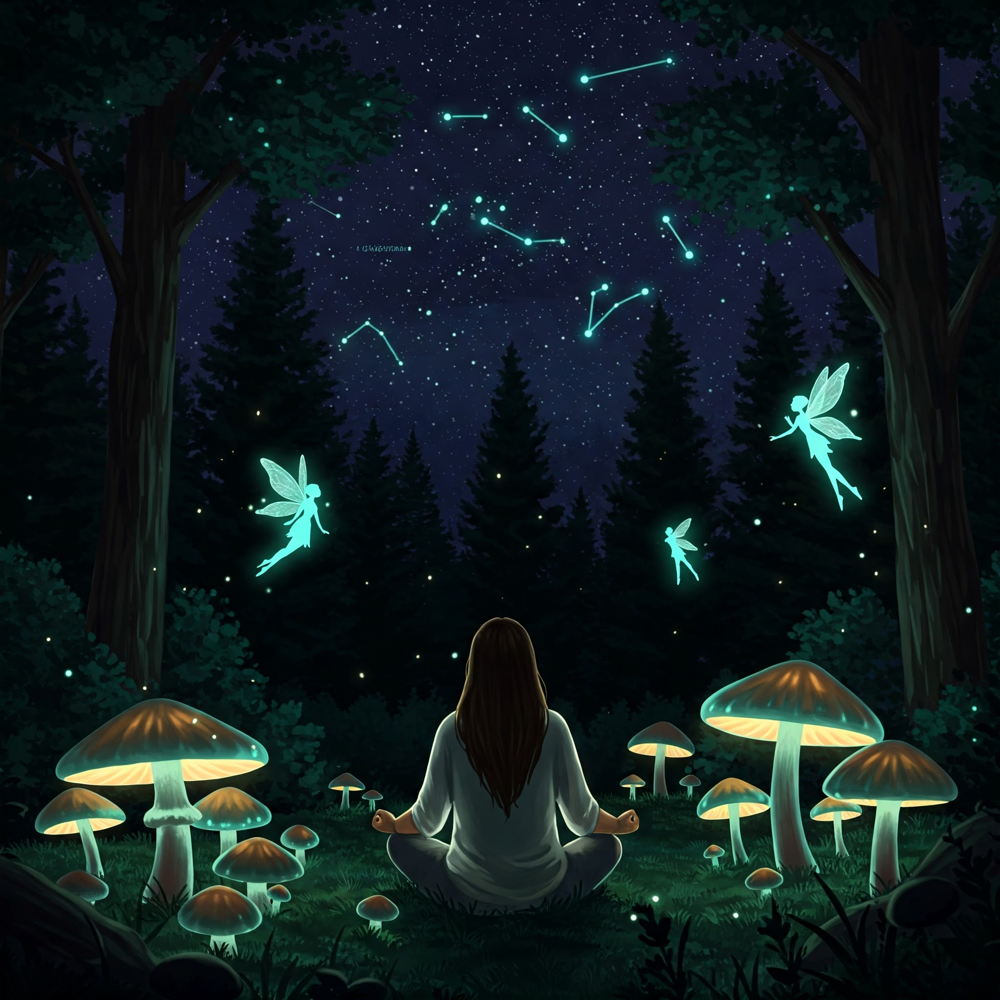

Welcome to Your Safe Space
Finding your way back can feel overwhelming, like searching for a lost piece. At iLostMyLegos, we understand. We're here to provide support, resources, and a community to help you rebuild and rediscover your strength. You are not alone.
Contact Me Directly
Need someone to talk to privately? Reach out. Your message is confidential.
Schedule a Support Call
Book a time that works for you to chat one-on-one. Let's discuss how we can help.
Insights & Stories Blog

Read articles on recovery, mental wellness, and stories of hope from the community.
Find Resources Near You

Locate NA/AA meetings, rehabilitation centers, therapists, and other vital addiction services.
Join the iLostMyLegos Community
Connect with others who understand. Share experiences, offer support, and find strength in numbers in our secure online forum.